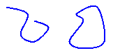
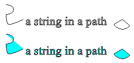

Замкнутые и незамкнутые кривые в GDI+
На следующем рисунке показано две кривые: открытая и закрытая.

Управляемый интерфейс для кривых
Замкнутых кривых есть внутренняя область, поэтому могут заполняться с помощью кисти. Graphics В класс GDI+ предоставляет следующие методы для заполнения замкнутые фигуры и кривых: FillRectangle, FillEllipse, FillPie, FillPolygon, FillClosedCurve, FillPath, и FillRegion. При вызове одного из этих методов, необходимо передать тип кисти (SolidBrush, HatchBrush, TextureBrush, LinearGradientBrush, или PathGradientBrush) в качестве аргумента.
FillPie Метод является дополнением к DrawArc метод. Так же, как DrawArc метод рисует части контура эллипса, FillPie метод заполняет часть внутреннюю часть эллипса. В следующем примере рисуется дуга и заполняет внутреннюю часть эллипса соответствующей части:
myGraphics.FillPie(mySolidBrush, 0, 0, 140, 70, 0, 120);
myGraphics.DrawArc(myPen, 0, 0, 140, 70, 0, 120);
Ниже показан дуги и заполненный круг.
FillClosedCurve Метод является дополнением к DrawClosedCurve метод. Оба метода автоматически закрывать кривой, подключившись к начальной точке конечной точки. В следующем примере рисуется кривую, проходящих через (0, 0), (60, 20) и (40, 50). Затем кривой автоматически закрывается, подключив (40, 50) до начальной точки (0, 0), а внутренняя область заполняется сплошным цветом.
Point[] myPointArray =
{ new Point(0, 0), new Point(60, 20), new Point(40, 50) };
myGraphics.DrawClosedCurve(myPen, myPointArray);
myGraphics.FillClosedCurve(mySolidBrush, myPointArray);
FillPath Метод заполняет внутреннюю часть различных частей пути. Если часть пути, не образует замкнутую кривую, FillPath метод автоматически закрывает этот самый кусок путь до его заполнения. В следующем примере рисует и заполняет путь, который состоит из дуги, фундаментальный сплайн, строка и сектора:
SolidBrush mySolidBrush = new SolidBrush(Color.Aqua);
GraphicsPath myGraphicsPath = new GraphicsPath();
Point[] myPointArray = {
new Point(15, 20),
new Point(20, 40),
new Point(50, 30)};
FontFamily myFontFamily = new FontFamily("Times New Roman");
PointF myPointF = new PointF(50, 20);
StringFormat myStringFormat = new StringFormat();
myGraphicsPath.AddArc(0, 0, 30, 20, -90, 180);
myGraphicsPath.AddCurve(myPointArray);
myGraphicsPath.AddString("a string in a path", myFontFamily,
0, 24, myPointF, myStringFormat);
myGraphicsPath.AddPie(230, 10, 40, 40, 40, 110);
myGraphics.FillPath(mySolidBrush, myGraphicsPath);
myGraphics.DrawPath(myPen, myGraphicsPath);
Ниже показан путь с и без сплошной заливки. Обратите внимание, что текст в строке контуров символов, но не заполнено, DrawPath метод. Это FillPath метод закрашиваются символов в строке.
